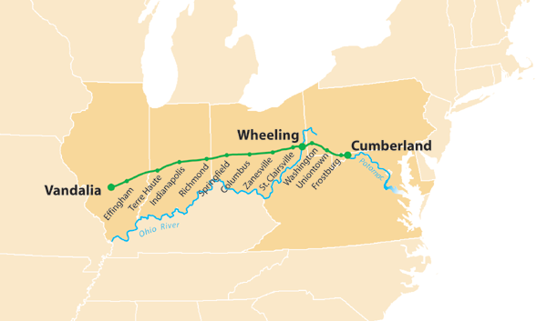

For personal family trees, like FamilySearch is a platform for a shared family tree
Platform Benefits
Foundation code written
GEDCOM import
GEDCOM export
REST API
OAuth support
More Benefits (later)
Open-source web, desktop, and mobile clients
Plug your tools into these clients
Clients written using web components
Embed components into your own app
Evidence-Based Data Model
Evidence-Based Advantages
More fun
Better model for collaboration
Increase chances to get new people involved
Why Adopt the Platform?
Advantages
Back-end code written
Less custom code to write
Don't need to spend money growing your user base
Free, hosted service
Simple REST API
Evidence-based approach
Disadvantages
Depend upon external entity
Loss of control over back-end storage
What's the Catch?
Pricing
Follow Github's lead
Free for public trees
Ad supported
Up to ~100Mb image storage
Low annual fee for private trees
No ads
Additional image storage
Roadmap

Roadmap
Feb 2015 Request for Comments
Mar 2015 Limited beta - server
Q2 2015 Public beta - server
Q3 2015 Web client
Q4 2015 Mobile client
Q1 2016 Desktop client
Dive Into The Details
Data Model Comparison
Ged
GedX
FS
DeadEnds
STEMMA
This
Person
X
X
X
X
X
X
Event
X
X
X
Post
Source
X
X
X
X
X
Post
Note
X
X
X
X
X
Post
Discussion
X
Post
Memory
X
Post
Person
Follows GedcomX
ID
Living
Gender // same as GedcomX
Names // same as GedcomX
Facts // same as GedcomX
Identifiers // for collaboration
Attribution // contributor, last-modified, change-message
ChangeID // change records track changes
Post
Superclass of Event, Source, Note, Discussion, and Memory
ID
EventType // e.g., Birth
Date
Place
Subject
Text
URL // external URL
SourceCitation
MediaID // uploaded image/doc
MediaType // e.g., image/jpeg
Tags
Identifiers
Attribution
ChangeID
Status // e.g., draft, active, discredited
EventRoles // one for each person in photo/record
PersonID
RoleType // e.g., father, mother, child
Fields
Label // e.g., age
Value
Comment
Posts can have comments
ID
PostID
Text
Identifiers
Attribution
ChangeID
Change
Change records track changes
ID
TargetID
TargetPrevChangeID // ID of previous Change record for Target
ReverseDelta // in json patch format
Attribution
Data Model Comparison
Ged
GedX
FS
DeadEnds
STEMMA
This
Family
X
X
Couple Relation
X
X
Family
Child-Par Relation
X
Family
Place
X
X
X
X
use FS
Agent
X
X
X
Document
X
Media
X
X
X
Family
Combines GedcomX Couple Relationship with FamilySearch ChildAndParents Relationship
ID
Couple // GedcomX couple relationship
Children // array of FamilySearch ChildAndParents relationships
Identifiers
Attribution
ChangeID
REST-ish API
GET, POST, PUT, DELETE verbs
No unique content types - everything is application/json